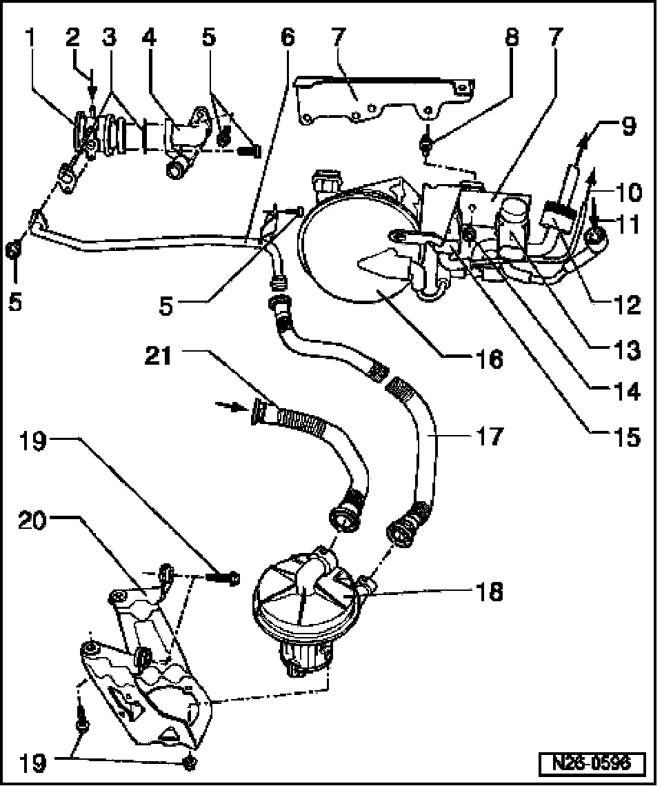
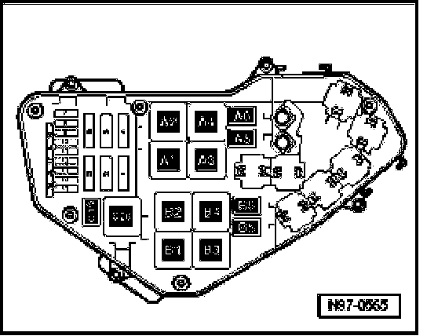

Air Injection: Locations
Secondary Air Injection (AIR) System Components, Removing And Installing
NOTE: Relay positions of relays in E-box (in plenum chamber, left), See Fig. 1.

1 Combination valve
2 From Secondary Air Injection (AIR) Solenoid Valve -N112-
- item 10
3 Gasket
- Always replace
4 Connecting piece
5 10 Nm
6 Pressure line
7 Bracket
8 Stud, 8 Nm
- Screwed in on intake manifold change-over
9 To vacuum connection on intake manifold change-over
- item no. 10
10 To combination valve
- Item no. 2
11 From vacuum actuator
- For intake manifold change-over
- item no. 16
12 Check-valve
- Note installed position
- White connection points to vacuum reservoir
13 Intake Manifold Change-Over Valve -N156-
14 8 Nm
15 Secondary Air Injection (AIR) solenoid valve -N112-*
16 Vacuum reservoir
17 Pressure hose
18 Check for secure seating
19 To disengage, squeeze together at front
20 Secondary Air Injection (AIR) pump motor -V101-*
21 10 Nm
22 Bracket
- For Secondary Air Injection (AIR) pump motor
23 Intake hose
- Check for secure seating
- To disengage, squeeze together at front
- From upper section of air filter housing, item 16
Fig. 1 Relay positions of relays in E-box (in plenum chamber, left)

Position Relay
A1 Motronic Engine Control Module (ECM) Power Supply Relay 2 -J670-
A3 Motronic Engine Control Module (ECM) Power Supply Relay -J271-*
A4 Secondary Air Injection (AIR) Pump Relay -J299-*
A5 Auxiliary Engine Coolant (EC) Pump Relay -J496-
A6 Fuel Pump (FP) Relay -J17-
- Fuel Pump (FP) -G6-
C19 Fuel Pump (FP) 2 Relay -J49-*
- Transfer Fuel Pump (FP) -G23-, right
NOTE:
- Do not use metallic tools to pry off relays from relay carrier. The terminals could conduct electricity.
- Check relay activation.